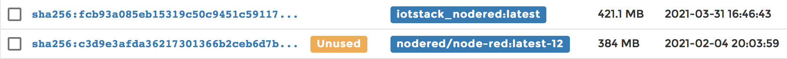
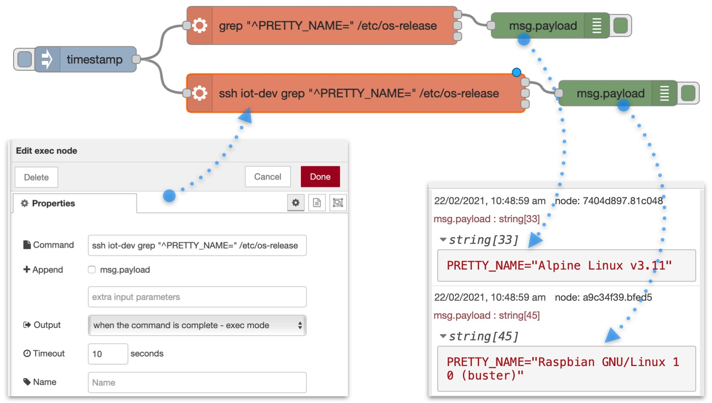

Node-RED¶
References¶
- nodered.org home
- GitHub: node-red/node-red-docker
- DockerHub: nodered/node-red
- Tutorial: from MQTT to InfluxDB via Node-Red
Significant files¶
~/IOTstack
├── .templates
│ └── nodered
│ └── service.yml ❶
├── services
│ └── nodered
│ ├── Dockerfile ❷
│ └── service.yml ❸
├── docker-compose.yml ❹
└── volumes
└── nodered ❺
├── data ❻
└── ssh ❼
- Template service definition.
- The Dockerfile.
- Working service definition (old-menu only, copied from ❶).
- The Compose file (includes ❶)
- Persistent storage area.
- Data directory (mapped volume).
- SSH directory (mapped volume).
How Node-RED gets built for IOTstack¶
Node-RED source code (GitHub)¶
The source code for Node-RED lives at GitHub node-red/node-red-docker.
Node-RED images (DockerHub)¶
Periodically, the source code is recompiled and pushed to nodered/node-red on DockerHub. See Node-RED and node.js versions for an explanation of the versioning tags associated with images on DockerHub.
IOTstack menu¶
When you select Node-RED in the IOTstack menu, the template service definition is copied into the Compose file.
Under old menu, it is also copied to the working service definition and then not really used.
You choose add-on nodes from a supplementary menu. We recommend accepting the default nodes, and adding others that you think you are likely to need. Node-RED will not build if you do not select at least one add-on node.
Key points:
- Under new menu, you must press the right arrow to access the supplementary menu. Under old menu, the list of add-on nodes is displayed automatically.
- Do not be concerned if you can't find an add-on node you need in the list. You can also add nodes via Manage Palette once Node-RED is running. See node management.
Choosing add-on nodes in the menu causes the Dockerfile to be created.
IOTstack first run¶
On a first install of IOTstack, you are told to do this:
$ cd ~/IOTstack
$ docker-compose up -d
docker-compose reads the Compose file. When it arrives at the nodered service definition, it finds:
1 2 3 4 5 6 7 | |
Note:
-
Prior to July 2022, IOTstack used the following one-line syntax for the
builddirective:3build: ./services/nodered/.The older syntax meant all local customisations (version-pinning and adding extra packages) needed manual edits to the Dockerfile. Those edits would be overwritten each time the menu was re-run to alter the selected add-on nodes. The newer multi-line syntax avoids that problem.
See also updating to July 2022 syntax.
In either case, the path ./services/nodered/. tells docker-compose to look for:
~/IOTstack/services/nodered/Dockerfile
which contains instructions to download a base image from DockerHub and then apply local customisations such as the add-on nodes you chose in the IOTstack menu. The result is a local image which is instantiated to become your running container.
Notes:
- During the build you may see warnings and deprecation notices. You may also see messages about "vulnerabilities" along with recommendations to run
npm audit fix. You should ignore all such messages. There is no need to take any action. -
If SQLite is in your list of nodes, be aware that it needs to be compiled from its source code. It takes a long time, outputs an astonishing number of warnings and, from time to time, will look as if it has gotten stuck. Be patient.
Acknowledgement: Successful installation of the SQLite node is thanks to @fragolinux.
When you run the docker images command after Node-RED has been built, you may see two rows for Node-RED:
$ docker images
REPOSITORY TAG IMAGE ID CREATED SIZE
iotstack_nodered latest b0b21a97b8bb 4 days ago 462MB
nodered/node-red latest deb99584fa75 5 days ago 385MB
nodered/node-redis the base image; andiotstack_noderedis the local image. The local image is the one that is instantiated to become the running container.
You may see the same pattern in Portainer, which reports the base image as "unused":

You should not remove the base image, even though it appears to be unused.
Whether you see one or two rows depends on the version of Docker you are using and how your version of
docker-composebuilds local images.
Securing Node-RED¶
Setting an encryption key for your credentials¶
After you install Node-RED, you should set an encryption key. Completing this step will silence the warning you will see when you run:
$ docker logs nodered
…
---------------------------------------------------------------------
Your flow credentials file is encrypted using a system-generated key.
If the system-generated key is lost for any reason, your credentials
file will not be recoverable, you will have to delete it and re-enter
your credentials.
You should set your own key using the 'credentialSecret' option in
your settings file. Node-RED will then re-encrypt your credentials
file using your chosen key the next time you deploy a change.
---------------------------------------------------------------------
…
Setting an encryption key also means that any credentials you create will be portable, in the sense that you can backup Node-RED on one machine and restore it on another.
The encryption key can be any string. For example, if you have UUID support installed (sudo apt install -y uuid-runtime), you could generate a UUID as your key:
$ uuidgen
2deb50d4-38f5-4ab3-a97e-d59741802e2d
Once you have defined your encryption key, use sudo and your favourite text editor to open this file:
~/IOTstack/volumes/nodered/data/settings.js
Search for credentialSecret:
//credentialSecret: "a-secret-key",
Un-comment the line and replace a-secret-key with your chosen key. Do not remove the comma at the end of the line. The result should look something like this:
credentialSecret: "2deb50d4-38f5-4ab3-a97e-d59741802e2d",
Save the file and then restart Node-RED:
$ cd ~/IOTstack
$ docker-compose restart nodered
Setting a username and password for Node-RED¶
To secure Node-RED you need a password hash. Run the following command, replacing PASSWORD with your own password:
$ docker exec nodered node -e "console.log(require('bcryptjs').hashSync(process.argv[1], 8));" PASSWORD
You will get an answer that looks something like this:
$2a$08$gTdx7SkckJVCw1U98o4r0O7b8P.gd5/LAPlZI6geg5LRg4AUKuDhS
Copy that text to your clipboard, then follow the instructions at Node-RED User Guide - Securing Node-RED - Username & Password-based authentication.
Referring to other containers¶
Node-RED can run in two modes. By default, it runs in "non-host mode" but you can also move the container to "host mode" by editing the Node-RED service definition in your Compose file to:
-
Add the following directive:
network_mode: host -
Remove the
portsdirective and the mapping of port 1880.
When Node-RED is not in host mode¶
Most examples on the web assume Node-RED and other services in the MING (Mosquitto, InfluxDB, Node-RED, Grafana) stack have been installed natively, rather than in Docker containers. Those examples typically include the loopback address + port syntax, like this:
127.0.0.1:1883
The loopback address will not work when Node-RED is in non-host mode. This is because each container behaves like a self-contained computer. The loopback address means "this container". It does not mean "this Raspberry Pi".
You refer to other containers by their container name. For example, a flow subscribing to an MQTT feed provided by the mosquitto container uses:
mosquitto:1883
Similarly, if a flow writes to an InfluxDB database maintained by the influxdb container, the flow uses:
influxdb:8086
Behind the scenes, Docker maintains a table, similar to an /etc/hosts file, mapping container names to the IP addresses on the internal bridged network that are assigned, dynamically, by Docker, when it spins up each container.
When Node-RED is in host mode¶
This is where you use loopback+port syntax, such as the following to communicate with Mosquitto:
127.0.0.1:1883
What actually occurs is that Docker is listening to external port 1883 on behalf of Mosquitto. It receives the packet and routes it (layer three) to the internal bridged network, performing network address translation (NAT) along the way to map the external port to the internal port. Then the packet is delivered to Mosquitto. The reverse happens when Mosquitto replies. It works but is less efficient than when all containers are in non-host mode.
GPIO Access¶
To communicate with your Raspberry Pi's GPIO you need to do the following:
-
Install dependencies:
$ sudo apt update $ sudo apt install pigpio python-pigpio python3-pigpio -
Install the
node-red-node-pi-gpiodnode. See node management. It allows you to connect to multiple Pis from the same Node-RED service. -
Make sure that the
pigpdioddaemon is running. The recommended method is listed here. In essence, you need to:- Use
sudoto edit/etc/rc.local; -
Before the
exit 0statement, insert the line:/usr/bin/pigpiod -
Reboot.
You can also pass parameters to
pigpiodto secure the service. See the writeup for further instructions. - Use
-
Drag a gpio node onto the canvas and configure it using the IP address of your Raspberry Pi (eg 192.168.1.123). Don't try to use 127.0.0.1 because that is the loopback address of the Node-RED container.
Sharing files between Node-RED and the Raspberry Pi¶
Containers run in a sandboxed environment. A process running inside a container can't see the Raspberry Pi's file system. Neither can a process running outside a container access files inside the container.
This presents a problem if you want write to a file outside a container, then read from it inside the container, or vice-versa.
IOTstack containers have been set up with shared volume mappings. Each volume mapping associates a specific directory in the Raspberry Pi file system with a specific directory inside the container. If you write to files in a shared directory (or one of its sub-directories), both the host and the container can see the same sub-directories and files.
Key point:
- Files and directories in the shared volume are persistent between restarts. If you save your data anywhere else inside the container, it will be lost when the container is rebuilt.
The Node-RED service definition in the Compose file includes the following:
volumes:
- ./volumes/nodered/data:/data
That decomposes into:
- external path =
./volumes/nodered/data - internal path =
/data
The leading "." on the external path implies "the folder containing the Compose file so it actually means:
- external path =
~/IOTstack/volumes/nodered/data - internal path =
/data
If you write to the internal path from inside the Node-RED container, the Raspberry Pi will see the results at the external path, and vice versa. Example:
$ docker exec -it nodered bash
# echo "The time now is $(date)" >/data/example.txt
# cat /data/example.txt
The time now is Thu Apr 1 11:25:56 AEDT 2021
# exit
$ cat ~/IOTstack/volumes/nodered/data/example.txt
The time now is Thu Apr 1 11:25:56 AEDT 2021
$ sudo rm ~/IOTstack/volumes/nodered/data/example.txt
In words:
-
Open a shell into the Node-RED container. Two things happen:
- You are now inside the container. Any commands you execute while in this shell are run inside the container; and
- The prompt changes to a "#" indicating that you are running as the "root" user, meaning you don't need
sudofor anything.
-
Use the
echocommand to create a small file which embeds the current timestamp. The path is in the/datadirectory which is mapped to the Raspberry Pi's file system. - Show that the file has been created inside the container.
- Exit the shell:
- You can either type the
exitcommand and press return, or press Control+D. - Exiting the shell drops you out of the container so the "$" prompt returns, indicating that you are outside the Node-Red container, running as a non-root user ("pi").
- You can either type the
- Show that the same file can be seen from outside the container.
- Tidy-up by removing the file. You need
sudoto do that because the persistent storage area at the external path is owned by root, and you are running as user "pi".
You can do the same thing from within a Node-RED flow.

The flow comprises:
-
An Inject node, wired to a Template node.
- When an Inject node's input tab is clicked, it sets the message payload to the number of seconds since 1/1/1970 UTC and triggers the flow.
-
A Template node, wired to both a Debug node and a File node. The template field is set to:
The time at the moment is {{payload}} seconds since 1/1/1970 UTC !- When this node runs, it replaces
{{payload}}with the seconds value supplied by the Inject node.
- When this node runs, it replaces
-
A Debug node.
- When this node runs, it displays the payload in the debug window on the right hand side of the Node-RED GUI.
-
A File node. The "Filename" field of the node is set to write to the path:
/data/flow-example.txt- When this node runs, it writes the payload to the specified file. Remember that
/datais an internal path within the Node-RED container.
- When this node runs, it writes the payload to the specified file. Remember that
Deploying the flow and clicking on the Inject node results in the debug message shown on the right hand side of the screen shot. The embedded terminal window shows that the same information is accessible from outside the container.
You can reverse this process. Any file you place within the path ~/IOTstack/volumes/nodered/data can be read by a "File in" node.
Executing commands outside the Node-RED container¶
A reasonably common requirement in a Node-RED flow is the ability to execute a command on the host system. The standard tool for this is an "exec" node.
An "exec" node works as expected when Node-RED is running as a native service but not when Node-RED is running in a container. That's because the command spawned by the "exec" node runs inside the container.
To help you understand the difference, consider this command:
$ grep "^PRETTY_NAME=" /etc/os-release
When you run that command on a Raspberry Pi outside container-space, the answer will be something like:
PRETTY_NAME="Debian GNU/Linux 11 (bullseye)"
If you run the same command inside a Node-RED container, the output will reflect the operating system upon which the container is based, such as:
PRETTY_NAME="Alpine Linux v3.11"
The same thing will happen if a Node-RED "exec" node executes that grep command when Node-RED is running in a container. It will see the "Alpine Linux" answer.
Docker doesn't provide any mechanism for a container to execute an arbitrary command outside of its container. A workaround is to utilise SSH. This remainder of this section explains how to set up the SSH scaffolding so that "exec" nodes running in a Node-RED container can invoke arbitrary commands outside container-space.
Task Goal¶
Be able to use a Node-RED exec node to perform the equivalent of:
$ ssh «HOSTNAME» «COMMAND»
where:
«HOSTNAME»is any host under your control (not just the Raspberry Pi running IOTstack); and«COMMAND»is any command known to the target host.
Assumptions¶
- SensorsIot/IOTstack is installed on your Raspberry Pi.
- The Node-RED container is running.
These instructions are specific to IOTstack but the underlying concepts should apply to any installation of Node-RED in a Docker container.
Executing commands "inside" a container¶
These instructions make frequent use of the ability to run commands "inside" the Node-RED container. For example, suppose you want to execute:
$ grep "^PRETTY_NAME=" /etc/os-release
You have several options:
-
You can do it from the normal Raspberry Pi command line using a Docker command. The basic syntax is:
$ docker exec {-it} «containerName» «command and parameters»The actual command you would need would be:
$ docker exec nodered grep "^PRETTY_NAME=" /etc/os-releaseNote:
- The
-itflag is optional. It means "interactive terminal". Its presence tells Docker that the command may need user interaction, such as entering a password or typing "yes" to a question.
- The
-
You can open a shell into the container, run as many commands as you like inside the container, and then exit. For example:
$ docker exec -it nodered bash # grep "^PRETTY_NAME=" /etc/os-release # whoami # exit $In words:
- Run the
bashshell inside the Node-RED container. You need to be able to interact with the shell to type commands so the-itflag is required. - The "#" prompt is coming from
bashrunning inside the container. It also signals that you are running as the root user inside the container. - You run the
grep,whoamiand any other commands. - You finish with the
exitcommand (or Control+D). - The "$" prompt means you have left the container and are back at the normal Raspberry Pi command line.
- Run the
-
Run the command from Portainer by selecting the container, then clicking the ">_ console" link. This is identical to opening a shell.
Variable definitions¶
You will need to have a few concepts clear in your mind before you can set up SSH successfully. I use double-angle quote marks (guillemets) to mean "substitute the appropriate value here".
-
«HOSTNAME» (required)
The name of your Raspberry Pi. When you first booted your RPi, it had the name "raspberrypi" but you probably changed it using
raspi-config. Example:iot-dev -
«HOSTADDR» (required)
Either or both of the following:
-
«HOSTFQDN» (optional)
If you have a local Domain Name System server, you may have defined a fully-qualified domain name (FQDN) for your Raspberry Pi. Example:
iot-dev.mydomain.comNote:
- Docker's internal networks do not support multicast traffic. You can't use a multicast DNS name (eg "raspberrypi.local") as a substitute for a fully-qualified domain name.
-
«HOSTIP» (required)
Even if you don't have a fully-qualified domain name, you will still have an IP address for your Raspberry Pi. Example:
192.168.132.9Keep in mind that a Raspberry Pi running IOTstack is operating as a server. A dynamic DHCP address is not appropriate for a server. The server's IP address needs to be fixed. The two standard approaches are:
- a static DHCP assignment configured on your DHCP server (eg your router) which always returns the same IP address for a given MAC address; or
- a static IP address configured on your Raspberry Pi.
-
-
«USERID» (required)
The user ID of the account on «HOSTNAME» where you want Node-RED flows to be able to run commands. Example:
pi
Step 1: Generate SSH key-pair for Node-RED (one time)¶
Create a key-pair for Node-RED. This is done by executing the ssh-keygen command inside the container:
$ docker exec -it nodered ssh-keygen -q -t ed25519 -C "Node-RED container key-pair" -N ""
Notes:
- The "ed25519" elliptic curve algorithm is recommended (generally described as quicker and more secure than RSA) but you can use the default RSA algorithm if you prefer.
- Respond to the "Enter file in which to save the key" prompt by pressing return to accept the default location.
- If
ssh-keygendisplays an "Overwrite (y/n)?" message, it implies that a key-pair already exists. You will need to decide what to do:- press y to overwrite (and lose the old keys)
- press n to terminate the command, after which you can investigate why a key-pair already exists.
Step 2: Exchange keys with target hosts (once per target host)¶
Node-RED's public key needs to be copied to the user account on each target machine where you want a Node-RED "exec" node to be able to execute commands. At the same time, the Node-RED container needs to learn the public host key of the target machine. The ssh-copy-id command does both steps. The required syntax is:
$ docker exec -it nodered ssh-copy-id «USERID»@«HOSTADDR»
-
Examples:
$ docker exec -it nodered ssh-copy-id pi@iot-dev.mydomain.com $ docker exec -it nodered ssh-copy-id pi@192.168.132.9
The output will be something similar to the following:
/usr/bin/ssh-copy-id: INFO: Source of key(s) to be installed: "/root/.ssh/id_ed25519.pub"
The authenticity of host 'iot-dev.mydomain.com (192.168.132.9)' can't be established.
ED25519 key fingerprint is SHA256:HVoeowZ1WTSG0qggNsnGwDA6acCd/JfVLZsNUv4hjNg.
Are you sure you want to continue connecting (yes/no/[fingerprint])?
Respond to the prompt by typing "yes" and pressing return.
The output continues:
/usr/bin/ssh-copy-id: INFO: attempting to log in with the new key(s), to filter out any that are already installed
expr: warning: '^ERROR: ': using '^' as the first character
of a basic regular expression is not portable; it is ignored
/usr/bin/ssh-copy-id: INFO: 1 key(s) remain to be installed -- if you are prompted now it is to install the new keys
pi@iot-dev.mydomain.com's password:
Enter the password you use to login as «USERID» on «HOSTADDR» and press return.
Normal completion looks similar to this:
Number of key(s) added: 1
Now try logging into the machine, with: "ssh 'pi@iot-dev.mydomain.com'"
and check to make sure that only the key(s) you wanted were added.
If you do not see an indication that a key has been added, you may need to retrace your steps.
Step 3: Perform the recommended test¶
The output above recommends a test. The test needs to be run inside the Node-RED container so the syntax is:
$ docker exec -it nodered ssh «USERID»@«HOSTADDR» ls -1 /home/pi/IOTstack
-
Examples:
$ docker exec -it nodered ssh pi@iot-dev.mydomain.com ls -1 /home/pi/IOTstack $ docker exec -it nodered ssh pi@192.168.132.9 ls -1 /home/pi/IOTstack
You should not be prompted for a password. If you are, you may need to retrace your steps.
If everything works as expected, you should see a list of the files in your IOTstack folder.
Assuming success, think about what just happened? You told SSH inside the Node-RED container to run the ls command outside the container on your Raspberry Pi. You broke through the containerisation.
Understanding what's where and what each file does¶
What files are where¶
Six files are relevant to Node-RED's ability to execute commands outside of container-space:
-
in
/etc/ssh:ssh_host_ed25519_keyis the Raspberry Pi's private host key-
ssh_host_ed25519_key.pubis the Raspberry Pi's public host keyThose keys were created when your Raspberry Pi was initialised. They are unique to the host.
Unless you take precautions, those keys will change whenever your Raspberry Pi is rebuilt from scratch and that will stop SSH from working.
You can recover by re-running
ssh-copy-id.
-
in
~/IOTstack/volumes/nodered/ssh:id_ed25519is the Node-RED container's private key-
id_ed25519.pubis the Node-RED container's public keyThose keys were created when you generated the SSH key-pair for Node-RED.
They are unique to Node-RED but will follow the container in backups and will work on the same machine, or other machines, if you restore the backup.
It does not matter if the Node-RED container is rebuilt or if a new version of Node-RED comes down from DockerHub. These keys will remain valid until lost or overwritten.
If you lose or destroy these keys, SSH will stop working.
You can recover by generating new keys and then re-running
ssh-copy-id. -
known_hostsThe
known_hostsfile contains a copy of the Raspberry Pi's public host key. It was put there byssh-copy-id.If you lose this file or it gets overwritten, SSH will still work but will re-prompt for authorisation to connect. This works when you are running commands from
docker exec -itbut not when running commands from anexecnode.Note that authorising the connection at the command line ("Are you sure you want to continue connecting?") will auto-repair the
known_hostsfile.
-
in
~/.ssh/:-
authorized_keysThat file contains a copy of the Node-RED container's public key. It was put there by
ssh-copy-id.Pay attention to the path. It implies that there is one
authorized_keysfile per user, per target host.If you lose this file or it gets overwritten, SSH will still work but will ask for the password for «USERID». This works when you are running commands from
docker exec -itbut not when running commands from anexecnode.Note that providing the correct password at the command line will auto-repair the
authorized_keysfile.
-
What each file does¶
SSH running inside the Node-RED container uses the Node-RED container's private key to provide assurance to SSH running outside the container that it (the Node-RED container) is who it claims to be.
SSH running outside container-space verifies that assurance by using its copy of the Node-RED container's public key in authorized_keys.
SSH running outside container-space uses the Raspberry Pi's private host key to provide assurance to SSH running inside the Node-RED container that it (the RPi) is who it claims to be.
SSH running inside the Node-RED container verifies that assurance by using its copy of the Raspberry Pi's public host key stored in known_hosts.
Config file (optional)¶
You don't have to do this step but it will simplify your exec node commands and reduce your maintenance problems if you do.
At this point, SSH commands can be executed from inside the container using this syntax:
# ssh «USERID»@«HOSTADDR» «COMMAND»
A config file is needed to achieve the task goal of the simpler syntax:
# ssh «HOSTNAME» «COMMAND»
A config file does not just simplify connection commands. It provides isolation between the «HOSTNAME» and «HOSTADDR» such that you only have a single file to change if your «HOSTADDR» changes (eg new IP address or fully qualified domain name). It also exposes less about your network infrastructure when you share your flows.
The goal is to set up this file:
-rw-r--r-- 1 root root ~/IOTstack/volumes/nodered/ssh/config
The file needs the ownership and permissions shown. There are several ways of going about this and you are free to choose the one that works for you. The method described here creates the file first, then sets correct ownership and permissions, and then moves the file into place.
Start in a directory where you can create a file without needing sudo. The IOTstack folder is just as good as anywhere else:
$ cd ~/IOTstack
$ touch config
Select the following text, copy it to the clipboard.
host «HOSTNAME»
hostname «HOSTADDR»
user «USERID»
IdentitiesOnly yes
IdentityFile /root/.ssh/id_ed25519
Open ~/IOTstack/config in your favourite text editor and paste the contents of the clipboard.
Replace the «delimited» keys. Completed examples:
-
If you are using the
«HOSTFQDN»form:host iot-dev hostname iot-dev.mydomain.com user pi IdentitiesOnly yes IdentityFile /root/.ssh/id_ed25519 -
If you are using the
«HOSTIP»form:host iot-dev hostname 192.168.132.9 user pi IdentitiesOnly yes IdentityFile /root/.ssh/id_ed25519
Save the file.
Change the config file's ownership and permissions, and move it into the correct directory:
$ chmod 644 config
$ sudo chown root:root config
$ sudo mv config ./volumes/nodered/ssh
Re-test with config file in place¶
The previous test used this syntax:
$ docker exec nodered ssh «USERID»@«HOSTADDR» ls -1 /home/pi/IOTstack
Now that the config file is in place, the syntax changes to:
$ docker exec nodered ssh «HOSTNAME» ls -1 /home/pi/IOTstack
-
Example:
$ docker exec nodered ssh iot-dev ls -1 /home/pi/IOTstack
The result should be the same as the earlier test.
A test flow¶

In the Node-RED GUI:
- Click the "+" to create a new, empty flow.
- Drag the following nodes onto the canvas:
- One "inject" node
- Two "exec" nodes
- Two "debug" nodes
- Wire the outlet of the "inject" node to the inlet of both "exec" nodes.
- Wire the uppermost "stdout" outlet of the first "exec" node to the inlet of the first "debug" node.
- Repeat step 4 with the other "exec" and "debug" node.
-
Open the first "exec" node and:
-
set the "command" field to:
- turn off the "append msg.payload" checkbox - set the timeout to a reasonable value (eg 10 seconds) - click "Done". 7. Repeat step 6 with the other "exec" node, with one difference: - set the "command" field to:grep "^PRETTY_NAME=" /etc/os-releasessh iot-dev grep "^PRETTY_NAME=" /etc/os-release
-
-
Click the Deploy button.
- Set the right hand panel to display debug messages.
- Click the touch panel of the "inject" node to trigger the flow.
-
Inspect the result in the debug panel. You should see payload differences similar to the following:
PRETTY_NAME="Alpine Linux v3.11" PRETTY_NAME="Debian GNU/Linux 11 (bullseye)"The first line is the result of running the command inside the Node-RED container. The second line is the result of running the same command outside the Node-RED container on the Raspberry Pi.
Suppose you want to add another «HOSTNAME»¶
-
Exchange keys with the new target host using:
$ docker exec -it nodered ssh-copy-id «USERID»@«HOSTADDR» -
Edit the config file at the path:
~/IOTstack/volumes/nodered/ssh/configto define the new host. Remember to use
sudoto edit the file. There is no need to restart Node-RED or recreate the container.
Maintaining Node-RED¶
Starting Node-RED¶
Use these commands to:
- Start the container; or
- Re-create the container if you have made a material change to the container's service definition in your Compose file.
$ cd ~/IOTstack
$ docker-compose up -d nodered
The first time you execute this command, the base image of Node-RED is downloaded from DockerHub, and then the Dockerfile is run to produce a local image. The local image is then instantiated to become the running container.
Stopping Node-RED¶
To stop the running container:
$ cd ~/IOTstack
$ docker-compose rm --force --stop -v nodered
Alternatively, you can stop the entire stack:
$ cd ~/IOTstack
$ docker-compose down
Restarting Node-RED¶
The restart command sends a signal to the processes running within the container. The container itself does not stop.
$ cd ~/IOTstack
$ docker-compose restart nodered
Re-building the local image¶
You need to rebuild the local image if you do any of the following:
- Change either of the build arguments (
DOCKERHUB_TAGorEXTRA_PACKAGES) in your Compose file. - Make a material change to your Node-RED Dockerfile, such as re-running the menu to change your selection of add-on nodes.
To rebuild your local image:
$ cd ~/IOTstack
$ docker-compose up --build -d nodered
$ docker system prune
Think of these commands as "re-running the Dockerfile". The only time a base image will be downloaded from DockerHub is when a base* image with a tag matching the value of DOCKERHUB_TAG can't be found on your Raspberry Pi.
Your existing Node-RED container continues to run while the rebuild proceeds. Once the freshly-built local image is ready, the up tells docker-compose to do a new-for-old swap. There is barely any downtime for your Node-RED service.
Upgrading Node-RED¶
The only way to know when an update to Node-RED is available is to check the nodered/node-red tags page on DockerHub.
Once a new version appears on DockerHub, you can upgrade Node-RED like this:
$ cd ~/IOTstack
$ docker-compose build --no-cache --pull nodered
$ docker-compose up -d nodered
$ docker system prune
Breaking it down into parts:
buildcauses the named container to be rebuilt;--no-cachetells the Dockerfile process that it must not take any shortcuts. It really must rebuild the local image;--pulltells the Dockerfile process to actually check with DockerHub to see if there is a later version of the base image and, if so, to download it before starting the build;noderedis the named container argument required by thebuildcommand.
Your existing Node-RED container continues to run while the rebuild proceeds. Once the freshly-built local image is ready, the up tells docker-compose to do a new-for-old swap. There is barely any downtime for your Node-RED service.
The prune is the simplest way of cleaning up old images. Sometimes you need to run this twice, the first time to clean up the old local image, the second time for the old base image. Whether an old base image exists depends on the version of docker-compose you are using and how your version of docker-compose builds local images.
Node-RED and node.js versions¶
Checking versions¶
You can use the npm version command to check which versions of Node-RED and node.js are running in your container:
$ docker exec nodered npm version
{
'node-red-docker': '2.2.2',
npm: '6.14.15',
ares: '1.18.1',
brotli: '1.0.9',
cldr: '37.0',
http_parser: '2.9.4',
icu: '67.1',
llhttp: '2.1.4',
modules: '72',
napi: '8',
nghttp2: '1.41.0',
node: '12.22.8',
openssl: '1.1.1m',
tz: '2019c',
unicode: '13.0',
uv: '1.40.0',
v8: '7.8.279.23-node.56',
zlib: '1.2.11'
}
In the above:
'node-red-docker': '2.2.2'indicates that version 2.2.2 of Node-RED is running. This is the version number you see at the bottom of the main menu when you click on the "hamburger" icon ("≡") at the top, right of the Node-Red window in your browser.node: '12.22.8'indicates that version 12.x ofnode.jsis installed.
Controlling versions¶
IOTstack uses a service definition for Node-RED that includes these lines:
3 4 5 6 | |
If you do not see this structure in your Compose file, refer to updating to July 2022 syntax.
The value of the DOCKERHUB_TAG gives you the ability to control, from your Compose file, which versions of Node-RED and node.js run within your Node-RED container.
The allowable values of DOCKERHUB_TAG can be found on the DockerHub Node-RED tags page. The table below contains examples of tags that were available on DockerHub at the time of writing (2022-07-06):
| tag | Node-RED version | node.js version |
|---|---|---|
| latest | 2.2.2 | 14.x |
| latest-14 | 2.2.2 | 14.x 📌 |
| 2.2.2 | 2.2.2 📌 | 14.x |
| 2.2.2-14 | 2.2.2 📌 | 14.x 📌 |
Interpreting the tag:
-
The sub-string to the left of the hyphen determines the version of Node-RED:
- "latest" means the most up-to-date version, implying that the actual version number can change any time you follow the process to upgrade Node-RED.
- "2.2.2" pins your container to that specific version of Node-RED, implying that the version number will be frozen until you change the pin.
-
The sub-string to the right of the hyphen determines the version of
node.js:- "-14" refers to
node.jsversion 14.x and pins your container to that specific version ofnode.js. - If the hyphen and suffix are omitted, it implies that the actual version of
node.jscan change any time you follow the process to upgrade Node-RED.
- "-14" refers to
In short:
- If you pin both sides to specific values (eg "2.2.2-14") then all decisions about when to upgrade and which versions to use are under your control; but
- If you use "latest" then all timing and version decisions are under the control of the maintainers of the DockerHub images.
IOTstack defaults to "latest". Although this appears to cede control to the maintainers of the DockerHub images, in practice it is no different to any other container where you pull its image directly from DockerHub using the latest tag (irrespective of whether latest is explicit or implied by omission).
The DOCKERHUB_TAG argument for Node-RED merely gives you the ability to pin to specific versions of Node-RED from within your Compose file, in the same way as you can use tags on image directives for other containers.
For example, suppose you wanted to pin to Node-RED version 2.2.2 with node.js version 12:
-
Edit your Compose file so that the
DOCKERHUB_TAGlooks like this:- DOCKERHUB_TAG=2.2.2-12 -
Run the re-building the local Node-RED image commands.
Changing a pinned version and rebuilding may result in a new base image being downloaded from DockerHub.
Node management¶
Installing nodes¶
You can install nodes by:
-
Adjusting the Node-RED Dockerfile. This can be done by:
- Running the IOTstack menu and changing the selected Node-RED nodes; or
- Editing your Node-RED Dockerfile using a text editor.
Using the IOTstack menu limits your choice of nodes to those presented in the menu. Editing the Dockerfile with a text editor is more flexible but carries the risk that your changes could be lost if you subsequently use the menu method.
To apply changes made to your Dockerfile, run the re-building the local Node-RED image commands.
-
Adding, removing or updating nodes in Manage Palette. Node-RED will remind you to restart Node-RED and that is something you have to do by hand:
$ cd ~/IOTstack $ docker-compose restart noderedNote:
-
Some users have reported misbehaviour from Node-RED if they do too many iterations of:
[make a single change in Manage Palette] $ docker-compose restart nodered [make a single change in Manage Palette] $ docker-compose restart nodered …It is better to:
[do ALL your Manage Palette changes] $ docker-compose restart nodered
-
-
Installing nodes inside the container via npm:
$ docker exec -it nodered bash # cd /data # npm install «node-name» /data # exit $ cd ~/IOTstack $ docker-compose restart noderedNote:
- You must put the
/dataonto the end of thenpm installcommand. Any formula you find on the web will not include this. You have to remember to do it yourself! - See also the note above about restarting too frequently.
-
You can use this approach if you need to force the installation of a specific version (which you don't appear to be able to do in Manage Palette). For example, to install version 4.0.0 of the "moment" node:
# npm install node-red-contrib-moment@4.0.0 /data
- You must put the
There is no real difference between the methods. Some nodes (eg "node-red-contrib-generic-ble" and "node-red-node-sqlite") must be installed by Dockerfile but the only way of finding out if a node must be installed via Dockerfile is to try Manage Palette and find that it doesn't work.
Aside from the exception cases that require Dockerfile or where you need to force a specific version, it is quicker to install nodes via Manage Palette and applying updates is a bit easier too. But it's really up to you.
If you're wondering about "backup", nodes installed via:
- Dockerfile – implicitly backed up when the Dockerfile is backed-up.
- Manage Palette or
npm install– explicitly backed up when the~/IOTstack/volumesdirectory is backed-up.
Basically, if you're running IOTstack backups then your add-on nodes will be backed-up.
Node precedence¶
Add-on nodes that are installed via Dockerfile wind up at the internal path:
/usr/src/node-red/node_modules
Add-on nodes installed via Manage Palette wind up at the external path:
~/IOTstack/volumes/nodered/data/node_modules
The Compose file volumes mapping:
./volumes/nodered/data:/data
implies that add-on nodes installed via Manage Palette are made available to Node-RED at the internal path:
/data/node_modules
Because there are two places, this invites the question of what happens if a given node is installed in both? The answer is that add-ons installed at:
/data/node_modules
take precedence over those installed at:
/usr/src/node-red/node_modules
Or, to put it more simply: in any contest, Manage Palette prevails over Dockerfile.
Resolving node duplication¶
Sometimes, even when you are 100% certain that you didn't do it, an add-on node will turn up in both places. There is probably some logical reason for this but I don't know what it is.
The problem this creates is that a later version of an add-on node installed via Dockerfile will be blocked by the presence of an older version of that node in:
~/IOTstack/volumes/nodered/data/node_modules
The nodered_list_installed_nodes.sh script helps discover when this situation exists. For example:
$ ~/IOTstack/scripts/nodered_list_installed_nodes.sh
Nodes installed by Dockerfile INSIDE the container at /usr/src/node-red/node_modules
ACTIVE: node-red-admin
ACTIVE: node-red-configurable-ping
ACTIVE: node-red-contrib-boolean-logic
ACTIVE: node-red-contrib-generic-ble
ACTIVE: node-red-contrib-influxdb
ACTIVE: node-red-dashboard
BLOCKED: node-red-node-email
ACTIVE: node-red-node-pi-gpiod
ACTIVE: node-red-node-rbe
ACTIVE: node-red-node-sqlite
ACTIVE: node-red-node-tail
Nodes installed by «Manage Palette» OUTSIDE the container at /home/pi/IOTstack/volumes/nodered/data/node_modules
node-red-contrib-boolean-logic-ultimate
node-red-contrib-chartjs
node-red-node-email
node-red-contrib-md5
node-red-contrib-moment
node-red-contrib-pushsafer
Notice how node-red-node-email appears in both lists. To fix this problem:
-
Move into the correct external directory:
$ cd ~/IOTstack/volumes/nodered/data/node_modules -
Create a sub-directory to be the equivalent of a local trash can:
$ sudo mkdir duplicates -
Move each duplicate node into the
duplicatesdirectory. For example, to movenode-red-node-emailyou would:$ sudo mv node-red-node-email duplicates -
Tell Node-RED to restart. This causes it to forget about the nodes which have just been moved out of the way:
$ docker-compose -f ~/IOTstack/docker-compose.yml restart nodered -
Finish off by erasing the
duplicatesfolder:$ sudo rm -rf duplicatesAlways be extremely careful with any
rm -rf, particularly when it is coupled with asudo. Double-check your work before you press return.
Package management¶
As well as providing the Node-RED service, the nodered container is an excellent testbed. Installing the DNS tools, Mosquitto clients and tcpdump will help you to figure out what is going on inside container-space.
There are two ways to add extra packages. The first method is to add them to the running container. For example, to add the Mosquitto clients:
$ docker exec nodered apk add --no-cache mosquitto-clients
The "apk" implies that the Node-RED container is based on Alpine Linux. Keep that in mind when you search for instructions on installing packages.
Packages installed this way will persist until the container is re-created (eg a down and up of the stack, or a reboot of your Raspberry Pi). This is a good choice if you only want to run a quick experiment.
The second method adds the packages to your local image every time you rebuild. Because the packages are in the local image, they are always in the running container. For example, to include the Mosquitto clients in every build:
-
Edit your Compose file to include the package on the
EXTRA_PACKAGESargument:- EXTRA_PACKAGES=mosquitto-clientsIf you do not see the
EXTRA_PACKAGESargument in your Compose file, refer to updating to July 2022 syntax. -
Rebuild your local image by running the re-building the local Node-RED image commands.
You can specify multiple packages on the same line. For example:
- EXTRA_PACKAGES=mosquitto-clients bind-tools tcpdump
Notes:
- Use a space to separate package names.
- Do not encapsulate the list in quote marks.
Updating to July 2022 syntax¶
The primary benefit of the new syntax is that you no longer risk the IOTstack menu overwriting any custom changes you may have made to your Node-RED Dockerfile.
If you install a clean copy of IOTstack, run the menu, enable Node-RED and select one or more add-on nodes then both your Compose file and Dockerfile will use the latest syntax automatically.
If you have an older version of IOTstack installed, the syntax used in your Compose file and Dockerfile will depend on when you last ran the menu and manipulated Node-RED.
To avoid any uncertainties, you can use a text editor to update your existing Compose file and Dockerfile to adopt the latest syntax.
Updating your Compose file¶
-
Step 1: Implement the new syntactic scaffolding:
The first three lines of the old syntax are:
1 2 3
nodered: container_name: nodered build: ./services/nodered/.Replace line 3 (the one-line
build:directive) with the following lines:3 4 5 6 7
build: context: ./services/nodered/. args: - DOCKERHUB_TAG=latest - EXTRA_PACKAGES= -
Step 2: Pin to the desired version (optional):
If your existing Dockerfile pins to a specific version, edit the value of
DOCKERHUB_TAG(line 6 of your updated Compose file) to use the tag from your Dockerfile. For example, if your existing Dockerfile begins with:FROM nodered/node-red:latest-12then line 6 of your Compose file should be:
6- DOCKERHUB_TAG=latest-12Note:
- IOTstack switched to
latest-12in March 2021. The default for July 2022 syntax islatest. At the time of writing, that is the same aslatest-14, which is what is recommended by Node-RED. If any of your flows has a dependence onnode.jsversion 12 (or if you do not want to take the risk), uselatest-12.
- IOTstack switched to
-
Step 3: Define extra packages (optional):
If your existing Dockerfile includes extra packages, edit the value of
EXTRA_PACKAGES(line 7 of your updated Compose file) to list the same packages. For example, if your existing Dockerfile includes:RUN apk update && apk add --no-cache eudev-dev mosquitto-clients bind-tools tcpdumpthen everything after
eudev-devshould appear on line 7 of your Compose file:6- EXTRA_PACKAGES=mosquitto-clients bind-tools tcpdumpNotes:
- use spaces between package names.
- do not enclose the list of packages in quotes.
- do not include
eudev-dev(it is specified in the updated Dockerfile).
Updating your Dockerfile¶
The first four lines of your existing Dockerfile will have a structure similar to this:
1 2 3 4 | |
The actual text will depend on whether you have modified the tag in the first line or added extra packages to the third line.
Replace the first four lines of your Dockerfile with the following lines:
1 2 3 4 5 6 7 8 9 10 11 12 13 14 15 16 17 18 19 20 21 22 23 | |
All remaining lines of your original Dockerfile should be left as-is.
Applying the new syntax¶
Run the re-building the local Node-RED image commands.